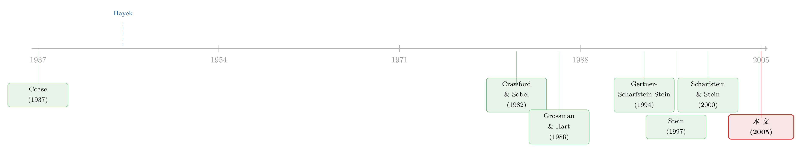

公司越大，吹牛的人越多——把「抢预算」写成一场信号博弈
本文读的是 Ozbas (2005, Journal of Financial Economics)：当一家公司大到没有任何一个人能掌握全部「专门知识」时，总部只能听各个分部经理「自报家门」。文章用一个两期信号博弈证明——经理们为了抢预算会夸大项目，而且 整合（integration）程度越高、内部竞争越激烈，说谎就越普遍、配置效率就越低；预算刚性、轮岗、集权、层级这些看似笨拙的组织安排，本质上都是在「改写博弈规则」、压住这股夸大冲动。
1 引言：一句海耶克，和一个绕不开的难题
文章开篇引了海耶克 (Hayek, 1945) 的一句话：
假设全部知识都能交给「一个头脑」，就等于把问题本身假设掉了，等于无视了现实世界里一切重要而有意义的东西。
这句话听起来像哲学，其实是这篇论文的全部张力所在。过去三十年，公司金融把大量精力花在「市场与公司之间」的信息不对称上——融资、信号、择时，我们已经研究得相当透彻。可是公司内部呢？一家大型多分部企业里，真正懂某条业务线的人，是天天泡在那个市场里的分部经理，而不是高高在上的总部。总部想配置资源，却没有「专门知识（specific knowledge）」去判断哪个项目真的好。
于是一个自然的问题冒出来了：整合度的提高，会不会反过来恶化资源配置？公司又能做点什么？
这正是 Ozbas 要回答的。他没有去跑回归，而是搭了一个极简、却能把直觉一层层逼出来的模型：一群「专家型经理」为了争夺总部有限的预算，各自向一个一无所知的总部汇报自己项目的好坏。经理是「帝国建造者（empire-builder）」，盘子越大、越赚钱越开心。那么——他们会不会集体撒谎？
答案出人意料地精巧：不是所有人都撒谎，撒谎的恰恰是那些「没指望」的人；而真正的麻烦在于，随着公司变大，撒谎会从「少数人」蔓延到「本来诚实的人」。我们一步步看。
2 一个最小的模型：三种经理，两个时期
先把积木摆出来。经理有两类：好经理 (g) 出现的概率是 \(\beta\)，坏经理 (b) 的概率是 \(1-\beta\)。项目也有两类：好项目回报 \(R_H\)（高），坏项目回报 \(R_L\)（低）。
关键的「类型差异」在这里：坏经理永远只能拿出坏项目；好经理则以概率 \(\mu\) 拿到好项目、以 \(1-\mu\) 拿到坏项目。这就是「好」与「坏」的全部含义——好经理未来更有指望。
经理的效用极其干脆，盘子乘以回报：
$$ U_i(K_i, R_i) = K_i R_i . $$
这里 \(K_i\) 是分到的资本预算。这个常数规模报酬（constant returns to scale）的设定有个好处：公司总资源的绝对大小变得无关紧要，模型的预测对公司在均衡中拿到多少外部融资都成立。
把「经理类型」和「项目类型」交叉一下，第一期就出现了三种博弈中真正相关的类型：
- Type-A：好经理 + 第一期好项目；
- Type-B：好经理 + 第一期坏项目；
- Type-C：坏经理 + 第一期坏项目（也只能是坏项目）。
时间线是两期。每期经理拿到一个项目点子，然后向总部报一个陈述：\(h\)（高）或 \(l\)（低）。总部完全不懂技术，只能根据大家报的话把预算 \(K\) 分给「看起来最好」的项目。第二期再来一轮，经理把第二期的收益按 \(\delta<1\) 折现。
模型里最要命的一个技术假设藏在脚注里：在足够高的管理层级上，根本没有足够的专业知识去评估和比较项目；一个掌握专门知识的经理，只要他愿意，可以不管真实项目是好是坏，随口报 \(h\) 或 \(l\)。这一点正是它和 Holmström (1982)、Holmström & Ricart i Costa (1986) 经典「职业关注」模型的根本分野——在那些模型里产出本身会暴露能力，而这里，话是可以随便说的。
最后一块积木，是让博弈「有意思」的耐心条件。文章假设：一个好经理，如果今天手里只有坏项目、但相信未来更有指望，他会愿意等。形式化就是
$$ R_L < \delta\, R_E, \qquad R_E \equiv \mu R_H + (1-\mu) R_L . $$
\(R_E\) 是好经理未来项目的期望回报。这个不等式说的是：今天一个坏项目的回报 \(R_L\)，比不上折现后的「未来期望」 \(\delta R_E\)。记住这一条，它是后面一切的支点。
3 反向归纳：从第二期倒着解
信号博弈要倒着解。先看第二期。
第二期是最后一期，没有「未来声誉」可言。所以报 \(h\) 严格优于报 \(l\)——既然之后不会再有人为你今天的话「算账」，那不如把话说满。于是：
引理 1（Lemma 1）：第二期，每个经理都报好项目。
这条引理看似平淡，却干净地说明：第二期的话毫无信息量，总部只能把第二期预算 \(K\) 平分给「第一期之后并列声誉最高」的那些经理。换句话说，所有的信息含量、所有的甄别，都被压缩到了第一期。第一期，才是真正的战场。
顺便提一句一个有用的基准：如果公司只有一个经理（stand-alone case），那根本不需要为了「分配」而沟通——没有竞争，就没有夸大。夸大，是竞争的产物。这是全文第一个反直觉的种子。
4 谁会说谎？两人竞争里的均衡
现在来到两人竞争。总部会根据第一期的陈述和项目结果（包括那些没被投资的项目的结果）更新后验。Ozbas 解出的唯一 Cho-Kreps 均衡是：
命题 1（Proposition 1）：第一期，坏经理（type-C）谎称自己有好项目，而好经理（type-A 和 type-B）不夸大。
这个结论的味道很足：撒谎的是 type-C——那个既没本事、手里也确实是烂项目的人。为什么偏偏是他？关键在于第一期结束后的后验信念。在均衡路径上，
$$ P(g\mid h, R_H) = 1, \qquad P(g\mid h, R_L) = 0, \qquad P(g\mid l, R_L) = 1 . $$
读出来就是：报了 \(h\) 却只做出 \(R_L\) 的人，当场暴露是坏经理（type-C），第二期一分钱拿不到；而老老实实报 \(l\) 的人，被认定是「手里暂时是坏项目、但本质是好经理」，第二期还能平分预算。
真正关键的一步在于 type-B 的算盘。一个 type-B 经理本来可以耍诈：报 \(h\)，第一期多抢半个预算 \(\tfrac{1}{2}K\)；但他做不出 \(R_H\)，会被打成坏经理，第二期再丢掉 \(\tfrac{1}{2}K\)。如果他诚实报 \(l\)，第一期少拿 \(\tfrac{1}{2}K\)，却保住了「好经理」的名声，第二期多拿 \(\tfrac{1}{2}K\)——而且那是他期待有更好项目的一期。把这两条路的期望收益相减，差额干净得惊人，不管对手是谁都一样：
$$ \tfrac{1}{2}K\left(\delta R_E - R_L\right) > 0 . $$
由耐心条件 \(R_L < \delta R_E\)，这个差为正，所以诚实（报 \(l\)）严格占优。把这个核心方程拆开看，直觉就全出来了：
诚实之所以能维持，是因为「第二期的声誉红利」压过了「第一期放弃的那点眼前利益」。这是一个典型的职业关注机制，但被巧妙地嫁接到了内部资本市场上。
那 type-C 呢？做同样的对比，他从报 \(h\) 相对报 \(l\) 得到的期望差是
$$ \tfrac{1}{2}K\,R_L\,(1-\delta) > 0 . $$
只要有任何时间折现 \(\delta<1\)，报 \(h\) 就严格占优。为什么 type-C 偏要撒谎？ 因为他心里清楚，自己是坏经理，未来不会有更好的项目——既然「明天的盘子」对他毫无意义，那不如「今天能抢多少抢多少」。对未来不抱指望的人，才最舍得透支信用。 这是全文第二个、也是最漂亮的反直觉。
（顺带一提，「明天更大的盘子」如何反过来约束今天的行为，是公司金融里一条很深的主线，可参见《好表现的奖励，不是奖金，而是「明天更大的盘子」》。）
5 反转：人越多，诚实越守不住
到这里，故事好像还挺乐观：撒谎的只有「烂到无可救药」的 type-C，好经理们都还守着诚实。
但真正关键的反转出现在整合度提高、竞争者增多的时候。
回想 type-B 守诚实的逻辑：报 \(l\) 的代价，是第一期少拿预算。可在两人博弈里，当对手也报 \(l\)（即对手是 type-B 或被识破的 type-C），他还能分到东西，代价有限。一旦竞争者变成两个、三个、更多呢？ 只要场上有任何一个人报了 \(h\)，预算就被那个人抢走，诚实报 \(l\) 的人几乎注定颗粒无收。竞争者越多，「诚实却能拿到资源」这件事的概率越往零里掉——于是诚实的第一期代价急剧上升，最终超过了它在第二期换来的声誉红利。
结论顺理成章：
一个在「只跟一个对手竞争」时还选择诚实的经理（第 3.1 节），在「跟两个或更多对手竞争」时会改口去夸大（第 3.2 节）。
也就是说，type-B 也沦陷了。战略沟通的均衡质量，随整合度单调恶化。这就是全文的核心命题，用一句话概括：
公司越整合，能说真话的人越少。 不是因为人变坏了，而是因为「诚实」这个策略在更激烈的内部竞争里赢不到资源——理性的好经理只能跟着把项目往天上吹。错配，正是从这里渗进整合型公司的。
6 配置效率，与「社会主义」的另一种解释
夸大泛滥的直接后果，是配置效率（allocative efficiency）下降：总部听到的全是 \(h\)，越来越难把钱投到真正的好项目上。
有意思的是，Ozbas 由此给内部资本市场文献里一个著名的经验现象提供了另一种解释。人们一直观察到：多分部（multisegment）公司对自身行业投资机会的敏感度偏低，并把它叫做内部资本市场的「社会主义（socialism）」——好的部门没多拿、差的部门没少拿。主流解读偏向「总部主动搞平均主义、或被内部寻租扭曲」（Scharfstein & Stein, 2000；Rajan, Servaes & Zingales, 2000）。
而本文说：也许总部不是不想敏感，而是不敢太敏感。如果总部把预算分配做得过于「唯陈述论」、谁喊得响给谁，只会刺激所有人更用力地夸大、把沟通质量进一步推垮。预算分配的「迟钝」，可能恰恰是面对夸大的一种理性自我约束。 作者还在配套的经验论文 Ozbas (2004) 里提出了一系列代理变量和检验，试图把这两种解释区分开。
（关于内部资源到底怎样在公司内部被「搬来搬去」，也可对照《把公司这个「黑箱」拆开：契约一违约，债主把资源搬去了哪里》里那条「控制权重配资源」的暗线。）
7 组织的解药：原来那些「笨办法」都在改写规则
如果问题出在「内部竞争太激烈、诚实赢不到资源」，那么解药的逻辑就清楚了：想办法降低竞争强度、或改变博弈的规则。Ozbas 接着把一系列我们习以为常、却常被嫌「官僚、僵化」的组织安排，重新解读成了精巧的激励工具：
- 预算刚性（rigid capital budgets）：硬性的预算上限，等于限制了「赢家通吃」的程度，削弱了内部竞争的烈度，从而改善沟通质量与配置效率。这也给「社会主义」之谜提供了上面说的那个替代解释。
- 轮岗（job rotation）：让如今被分到差资产的经理，未来有机会被调到更好的资产上。给他一个「未来」，他就更愿意今天说真话——本质上是在人为地放大第二期的声誉红利。
- 集权（centralization）：把经理们绑进只有「沟通准确才能成功」的团队生产里，让说谎的代价内部化。
- 委派与层级（delegation and hierarchies）：通过约束内部竞争来改善沟通。
把这四样东西串起来看，文章真正的野心浮出水面：它把内部资本市场和内部劳动力市场（声誉、职业关注、轮岗、晋升）接到了同一个模型里——资源配置和组织结构，原来是一枚硬币的两面。
（顺带一提，「组织形式如何决定信息能不能被用好」这条线，《大银行为什么不爱给小店放贷？——一个关于「软信息」的组织故事》是一个很好的经验对照。）
8 文献脉络
把这篇论文放回它生长的土壤，能看得更清楚。
最上游是关于「企业边界」的科斯传统：Coase (1937) 之后，Williamson (1975, 1985)、Klein, Crawford & Alchian (1978) 讲套牢与交易成本，Grossman & Hart (1986)、Hart & Moore (1990) 用产权/不完全合约奠定了主流的整合理论。但这一支有个隐含假设：所有者-经理拥有实现高效率所需的全部专门知识。Ozbas 的出发点恰恰是把这条假设掀翻——大公司里没有任何一个人掌握全部知识，这正是海耶克 (Hayek, 1945) 的洞见。

接着，公司金融里长出了内部资本市场这一支：Gertner, Scharfstein & Stein (1994) 讲控制权如何影响努力激励，Stein (1997) 讲有信息的总部如何「赢家通吃」地腾挪资金，Scharfstein & Stein (2000)、Brusco & Panunzi (2000) 讲总部如何为了事前激励而故意低效配置。这些工作大多盯着「努力（effort）」这一面。
与此并行，一条「战略沟通」的支流从 Crawford & Sobel (1982) 的 cheap talk 模型流出，经 Dessein (2002)、Harris & Raviv (2002)、Marino & Matsusaka (2004) 流入组织设计；而 Harris & Raviv (1996, 1998)、Bernardo, Cai & Luo (2001) 则用机制设计和揭示原理（revelation principle）研究资本预算。
本文的位置，是把「战略沟通 + 内部竞争」这套语言，第一次系统地用到「整合与资源配置」的联合问题上：它不假设承诺权、不用揭示原理，转而聚焦沟通而非努力，把职业关注（Holmström, 1982）接进来，并最终在内部资本市场与内部劳动力市场之间，架起了一座桥。
评论与延伸（Q&A + 研究方向）
(a) 几个可能的疑问
Q：为什么撒谎的偏偏是最差的 type-C，而不是最有「本钱」的 type-A？
因为撒谎的约束来自「未来」。type-A 手里就是好项目，报真话 \(h\) 本就是最优，无需撒谎；type-C 是坏经理、未来也不会更好，「明天的盘子」对他毫无价值，所以他最舍得透支当下的信用去抢眼前的钱。撒谎的不是最有能力的人，而是最没指望的人。
Q：这和经典的职业关注模型（Holmström）到底差在哪？
差在「话能不能随便说」。在 Holmström 的世界里，产出会暴露能力，经理只能通过努力去影响信号；这里的关键技术假设是，掌握专门知识的经理可以不顾真实项目类型、随口报 \(h\) 或 \(l\)——高层根本没有专业知识去当场证伪。沟通本身成了战略变量，这才有「夸大」可言。
Q：「整合度越高、沟通越差」靠不靠谱，会不会只是模型设定凑出来的？
机制其实很朴素：诚实报 \(l\) 只有在「没人抢」时才拿得到资源，竞争者一多，至少有人报 \(h\) 的概率趋近于 1，诚实的期望回报塌向零。它不依赖具体函数形式，依赖的是「赢家通吃 + 人多」这个组合。当然，模型也做了强假设（常数规模报酬、总部全然无知、可观测未投资项目的结果），这些都是为了把直觉逼干净。
Q：总部「迟钝」地分预算，凭什么算理性，而不是无能？
因为分配规则会反过来塑造汇报行为。如果总部把钱无脑给「喊得最响的」，就是在补贴夸大、毁掉沟通质量。预算刚性相当于事前承诺不把竞争搞得太凶，于是换来更可信的汇报。这正是它对「内部资本市场社会主义」给出的替代解释。
Q：模型说的「整合」，是纵向、横向，还是混合多元化？
文章特意不站队。它只需要「整合带来专门知识的不对称」这一点，并指出按其对专门知识的强调，横向/混合（lateral）整合里这种不对称大概更普遍，而纵向、同业整合里相对弱一些。
Q：可观测「没投资项目的结果」这个假设，会不会太强、撑起了全部结论？
作者明确说这是「不失一般性」的，而且方向上反而削弱了夸大的诱惑——因为坏结果更容易被看穿。一般而言，不可观测会让沟通问题更糟。所以这个假设不是在帮结论作弊，而是给了它一个保守的底子。
(b) 几个可能的研究问题与提案
1. 整合度与「项目语言」的文本实证 - 【经济故事】模型预言：越整合、内部竞争越激烈的公司，分部经理对项目的描述越「夸大」。如今我们能用大模型量化年报、内部备忘、电话会里项目描述的「乐观倾斜」。 - 【可行性】中。难点在拿到内部汇报文本（多为私有）；可退而求其次用分部级披露 + 管理层讨论文本（Compustat Segment + 10-K MD&A），以分部数量/多元化指数作为整合代理。识别靠并购/分拆带来的整合度外生变动。
2. 把它搬到「内部信用配置」：集团内部的债务额度争夺 - 【经济故事】把「项目」换成「子公司的融资需求」，把「预算」换成集团内部的信用额度或母公司担保。越大的企业集团，子公司是否越倾向于夸大资金需求、推高内部错配？这恰好落在公司债/信用市场的交叉口。 - 【可行性】中。需要集团-子公司层面的内部往来与担保数据（中国的企业集团、债券募集说明书里的关联担保链是不错的样本），识别可借助担保新规等政策冲击。
3. 外资持有人是否改变了「内部沟通」的均衡？ - 【经济故事】外资机构进入后，治理与信息环境改善，可能压低分部经理的夸大空间、提升内部配置效率；也可能因为「远程、专门知识更稀缺」而恶化。方向是开放问题。 - 【可行性】中。可用 MSCI 纳入、QFII 额度放开等外生事件，配多分部公司的分部投资-机会敏感度作结果变量。与《外资真是「蝗虫」吗？》的长期效应视角天然互补。
4. 「预算刚性」的因果检验：刚性真能换来更准的内部信号吗？ - 【经济故事】模型说预算刚性通过降低竞争烈度改善沟通。能否找到一个公司「收紧/放松预算流程」的准自然实验，检验其后内部资本配置敏感度与项目实现偏差的变化？ - 【可行性】低到中。最大障碍是「预算刚性」难以观测与外生化；或许可借 CFO 更替、ERP/预算系统上线等事件做事件研究，但内生性很强，要诚实承认识别脆弱。
5. 轮岗作为「声誉延长器」的微观证据 - 【经济故事】轮岗之所以有用，是因为它给「今天分到差资产的经理」一个未来更好的盘子，从而放大第二期声誉红利、压住夸大。可检验：实行经理轮岗制度的公司，分部投资是否更贴近真实机会？ - 【可行性】中。需要经理-分部的匹配面板（领英、高管履历数据库可拼），用轮岗频率作处理，难点是轮岗本身往往是内生的人事安排。
参考文献
- Coase, R. (1937). The nature of the firm. Economica 4, 386–405.
- Crawford, V. P., & Sobel, J. (1982). Strategic information transmission. Econometrica 50, 1431–1451.
- Cho, I., & Kreps, D. M. (1987). Signalling games and stable equilibria. Quarterly Journal of Economics 102, 179–221.
- Gertner, R., Scharfstein, D. S., & Stein, J. (1994). Internal versus external capital markets. Quarterly Journal of Economics 109, 1211–1230.
- Grossman, S., & Hart, O. (1986). The costs and benefits of ownership: a theory of vertical and lateral integration. Journal of Political Economy 94, 691–719.
- Harris, M., & Raviv, A. (1996). The capital budgeting process: incentives and information. Journal of Finance 51, 1139–1174.
- Hart, O., & Moore, J. (1990). Property rights and the nature of the firm. Journal of Political Economy 98, 1119–1158.
- Hayek, F. A. (1945). The use of knowledge in society. American Economic Review 35, 519–530.
- Holmström, B. (1982, repr. 1999). Managerial incentive problems: a dynamic perspective. Review of Economic Studies 66, 169–182.
- Ozbas, O. (2005). Integration, organizational processes, and allocation of resources. Journal of Financial Economics 75(1), 201–242.
- Rajan, R., Servaes, H., & Zingales, L. (2000). The cost of diversity: the diversification discount and inefficient investment. Journal of Finance 55, 35–80.
- Scharfstein, D. S., & Stein, J. (2000). The dark side of internal capital markets: divisional rent-seeking and inefficient investment. Journal of Finance 55, 2537–2564.
- Stein, J. (1997). Internal capital markets and the competition for corporate resources. Journal of Finance 52, 111–133.